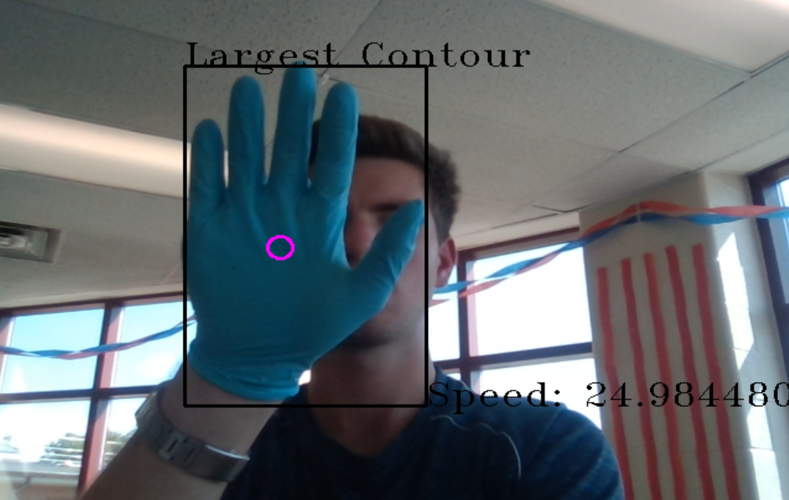
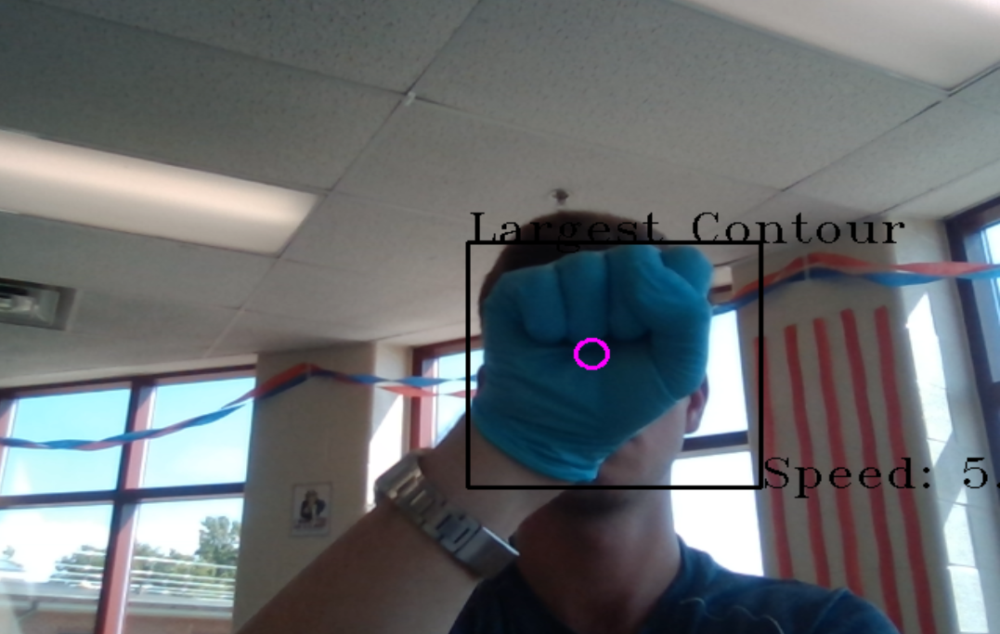

I am writing software and designing the electromechanical components for a vision-based hand tracking turret. The turret will eventually track small drones and illuminate them with a laser pointer. The software is currently capable of hand tracking using basic Gaussian and EMA filtering, HSV segmentation, and centroids. The first iteration of the electromechanical system is under development. I hope to use experience gained from controls and signals/DSP this fall to improve the quality of the tracking software and accelerate this project.

The program tracks the centroid of the hand and prints its speed (px/s) and direction (Left, Right, Up, Down from the perspective of the camera) to the user.

The hand is detected regardless of gesture when the glove is worn. In the next iteration, more robust filtering will be used to isolate the hand from its surroundings (including face, arms, and trunk) without a glove.